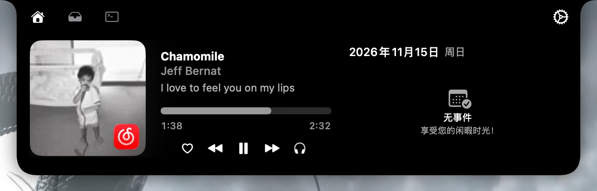
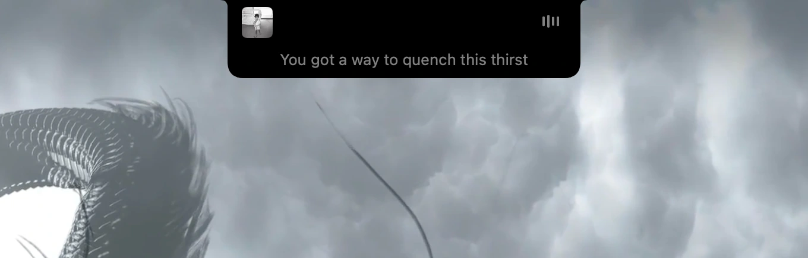
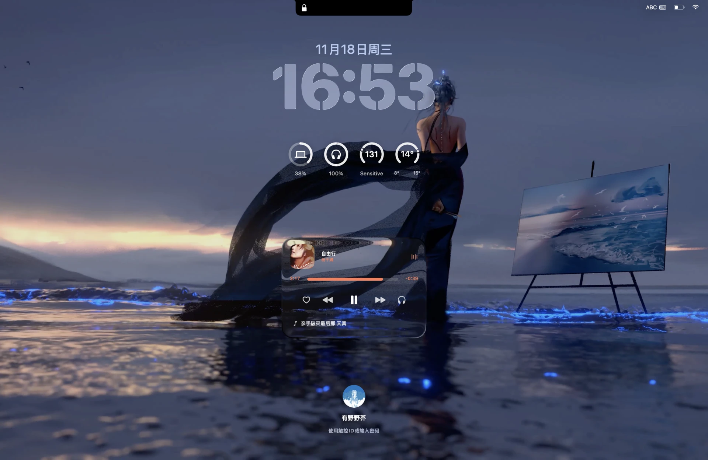
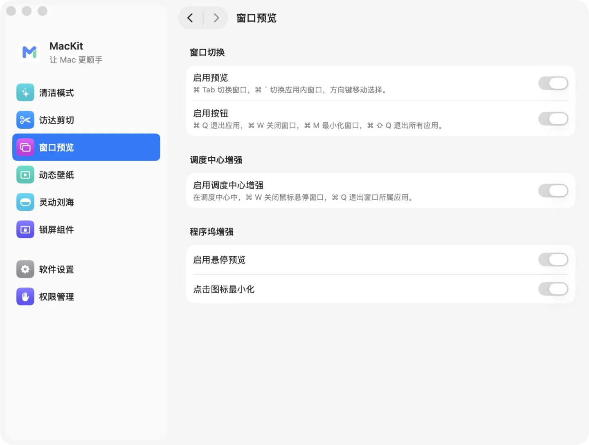

⌘ Tab
窗口预览
看一眼缩略图，再切到想要的窗口。悬停程序坞图标也能预览，在调度中心可直接关闭窗口。
MacKit 原生 macOS 工具集
切换窗口、移动文件，或抬眼看一眼播放中的歌。
让 Mac 上每天的小操作更顺手。
macOS 14.6+ Apple Silicon 与 Intel




从桌面到锁屏，把常用的操作放在顺手的地方。
⌘ Tab
看一眼缩略图，再切到想要的窗口。悬停程序坞图标也能预览，在调度中心可直接关闭窗口。
⌘ X ⌘ V
在访达里剪切文件，到目标文件夹粘贴即可移动。临时改主意，按 Esc 取消。
Esc × 5 退出
擦拭键盘、触控板或屏幕时，临时锁定输入。连续按下并松开 Esc 五次即可恢复。
媒体 · 日程 · 文件 · 终端
在屏幕顶部切歌、看歌词、查日程。展开后还能暂存和分享文件，或者打开终端。
媒体 · 天气 · 电量
在锁屏上看常用信息。用液态玻璃组件搭配壁纸，也可以在设置预览里拖动组件位置。
桌面 · 锁屏 · 屏保
将本地视频用作动态桌面、锁屏和屏保。桌面被遮挡时可暂停播放。原生扩展需要 macOS 26+。